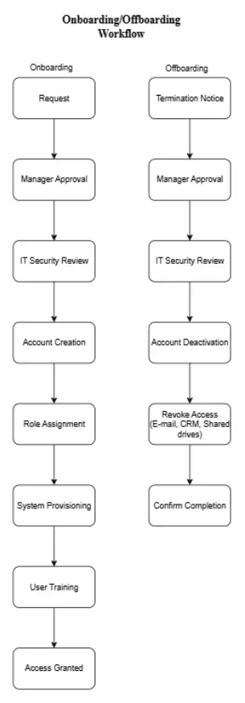

🏢 Background
With TechFlow’s CRM nearing launch, new employees and early adopters require accounts. However, support has no standardised user access request process. Accounts are created inconsistently, leading to security risks (duplicate accounts, improper access levels).
You’ve been asked to build a secure user account management framework that ensures proper onboarding, role-based permissions, and controlled access to the system.
🖥️ Task
- Design an onboarding/offboarding workflow.
- Create role-based access rules.
- Draft mock tickets for access requests.
- Build a permissions matrix.
🧾 Deliverables
- User Access Request Form
- Permissions Matrix
- Sample Access Tickets (20 examples)
- Onboarding/Offboarding Workflow
- Training Guide
📄 1. User Access Request Form
| Field | Description |
|---|---|
| Full Name | User’s full name |
| Department | Team or department |
| Email Address | Work email |
| Requested Role | Admin / Manager / Support / End-user |
| Start Date | Onboarding date |
| Approval Signature | Supervisor/Manager approval |
🔐 2. Permissions Matrix
| Role | Access Level | Capabilities |
|---|---|---|
| Admin | Full | Manage users, configure system, access all data |
| Manager | High | Approve requests, view reports, manage teams |
| Support | Moderate | Assist users, reset passwords, limited data access |
| End-user | Basic | Use assigned features, update own profile |
🎟️ 3. Sample Access Tickets
Examples include:
- New user account requests
- Role change requests
- Account termination requests
Sample Ticket Example:
| Ticket ID | Request Type | User | Status |
|---|---|---|---|
| #001 | New Account | John Mokoena | Approved |
| #002 | Role Change | Lebo Dlamini | Pending |
| #003 | Account Termination | Sipho Ndlovu | Completed |
🧭 4. Onboarding / Offboarding Workflow (Diagram)

📘 5. Training Guide (Summary)
Account Creation Steps:
- Receive and verify the access request form.
- Confirm managerial approval and role alignment.
- Create user account in CRM system.
- Assign appropriate role-based permissions.
- Send credentials securely to the new user.
Account Termination Steps:
- Receive termination notification or HR exit form.
- Revoke system access and change passwords immediately.
- Archive user data for audit compliance.
- Deactivate account within 24 hours of departure.
- Update access logs and report completion.